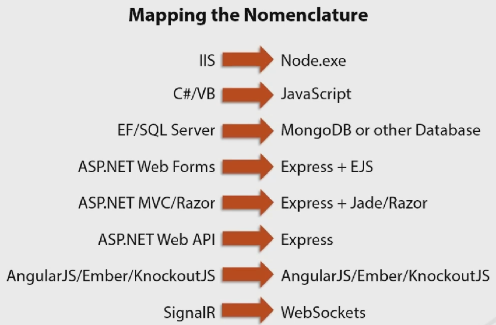

Node.js Basics¶
Recently, I used Node.js quite a lot to handle personal projects. It is easy to start, and also easy to get wrong. This blog covers the basics part of Node.js development.
Module¶
Require¶
Every module in node is singleton.
Use require to use module, the following is the search sequence of require method:
- First find js file
- Then json file
- Then node file
If the module name is index.js, then it is okay just write directory name in the require parameter.
require() can inject objects for dependency injection.
Module exports¶
From the modele itself, use exports keyword to make properties and methods available outside of the module file.
exports.myDateTime = function () {
return Date();
};
Http module¶
http module can be used to write header or content. See following example:
var http = require('http');
http.createServer(function (req, res) {
res.writeHead(200, {'Content-Type': 'text/html'});
res.write('Hello World!');
res.write(req.url); // read query string
res.end();
}).listen(8080);
File module¶
File module can be used for file system operation.
require(fs)
var http = require('http');
var fs = require('fs');
http.createServer(function (req, res) {
fs.readFile('demofile1.html', function(err, data) {
res.writeHead(200, {'Content-Type': 'text/html'});
res.write(data);
res.end();
});
}).listen(8080);
Other useful methods in file module.
write file: fs.appendfile(), fs.open(), fs.writefile()
delete file: fs.unlink()
rename: fs.rename()
Url module¶
Url module can be used to parse various parts of url.

url.parse('https://www.pluralsight.com/search?q=buna')
Url {
protocol: 'https:',
slashes: true,
auth: null,
host: 'www.pluralsight.com',
port: null,
hostname: 'www.pluralsight.com',
hash: null,
search: '?q=buna',
query: 'q=buna',
pathname: '/search',
path: '/search?q=buna',
href: 'https://www.pluralsight.com/search?q=buna' }
example
http.createServer(function (req, res) {
res.writeHead(200, {'Content-Type': 'text/html'});
var q = url.parse(req.url, true).query;
var txt = q.year + " " + q.month;
res.send(txt);
}).listen(8080);
Use the url for testing: http://localhost:8080/?year=2017&month=July Output is: 2017 July
Event model¶
The event model of node.js is asymmetric. The core part is event loop.
For example, here is how Node.js handles a file request:
- Sends the task to the computer’s file system.
- Ready to handle the next request.
- When the file system has opened and read the file, the server returns the content to the client.
The event loop looks like this:
- The entity that handles external events and converts them into callback invocations
- A loop that picks events from the event queue and pushes their callbacks to the call back stack
- Node will process the event queue when call stack is empty
There are three methods look quite similar, it will be good to understand the difference:
- setTimeout
- setImmediate
- Process.nextTick (not relevant event loop)
NPM¶
Npm is node package manager, which is the core part of javascript ecosystem.
Commands¶
Npm start, npm test: will run when there is start/test script in the package.json
Npm -h: to show the help
Npm help: can open a browser
Npm init: will create the package.json
Npm list: list all installed packages
Npm can install global package, and can also install in local repository
Npm can specify the versions when using npm i
Npm can specify environment, e.g. –save, –prod, –dev
NPM can choose install from ‘gist’ instead of a version, also can install from folder
npm publish: can publish your package to npm registery
Version¶
Semantic version: major.minor.patch
- Patch increase when bug fixing
- Minor increase when introduce new feature
- Major increase when breaking changes
In the package.json: ^means major version can be greater, ~means minor version can be greater
npm version patch/minor/major to update the version info in the pcakge.json rather than manually change the version (it will also do the git commit for developers)
Others¶
Difference from client javascript¶
Javascript in node.js app, differentiate client and server code.
For example:
- server can call require while client can call windows.
- server code modification needs to restart node to see the changes, while client code just need browser refresh.
- console.log in the server code will output the message to terminal app, the client code will output the message the browser console.
Error code¶
If there is error, can use res.status(500).send(err) to return the error code
bookRouter.route('/Books/:bookId').get(function(req, res)) {
Book.findById(req.params.bookId, function(err, book) {
if (err) {
res.status(500).send(err);
} else {
res.json(book);
}
})
}
Compare with Microsoft technologies¶
Written by Binwei@Singapore